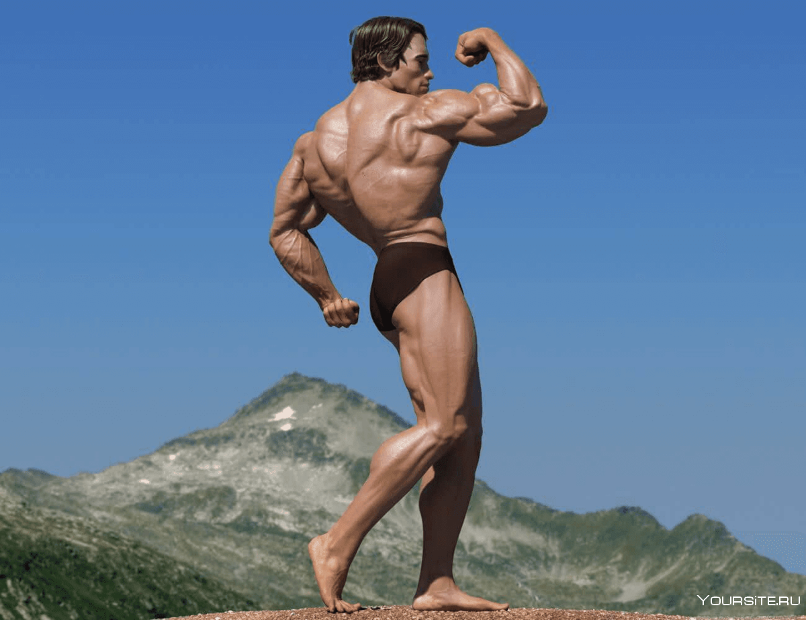
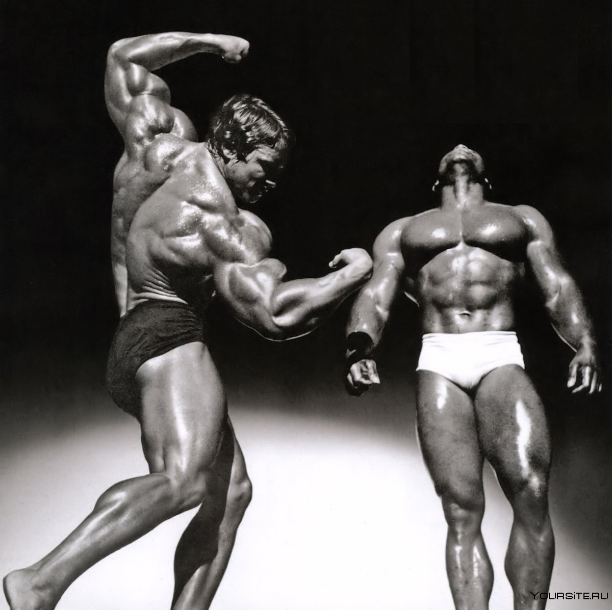

Я добился большого прогресса на начальном этапе своих тренировок, когда
служил в австрийской армии и имел много всяких дел. Когда мы в течение
шести недель участвовали в манёврах вдоль чехословацкой границы, мне
приходилось водить танк по пятнадцать часов в день, закачивать топливо
при помощи ручного насоса, «бороться» с огромными топливными бочками и
заниматься ремонтом. Мы спали в окопах или под танками и должны были
вставать в шесть часов утра. Однако мы с приятелем вставали в пять,
залезали в отсек для танковых инструментов, в котором хранили свои
штанги, и до общего подъёма тренировались целый час. После окончания
дневной части учений мы тренировались ещё один час. Я не могу
представить более тяжёлых условий для тренировок и поэтому утверждаю,
что найти время и силы для занятий — это вопрос мотивации и
заинтересованности. Настоящий атлет всегда, в любой ситуации найдёт
время и место для тренировок ага


Я перед олимпиадой
Для меня свобода выбора означала приезд сюда, в Америку. Ведь я приехал
из страны, где государство регулировало экономику,
из страны, где 18-летние ребята уже говорят о пенсии, но я, я хотел
большего. Я хотел быть лучшим, однако такой индивидуализм
несовместим с [европейским] социализмом, поэтому я решил, что мне нужно
поехать в Америку.
У меня не было денег, зато была свобода их зарабатывать. Сделав ставку
на свои накачанные мышцы, я сумел построить большой бизнес и карьеру в
кино[13].